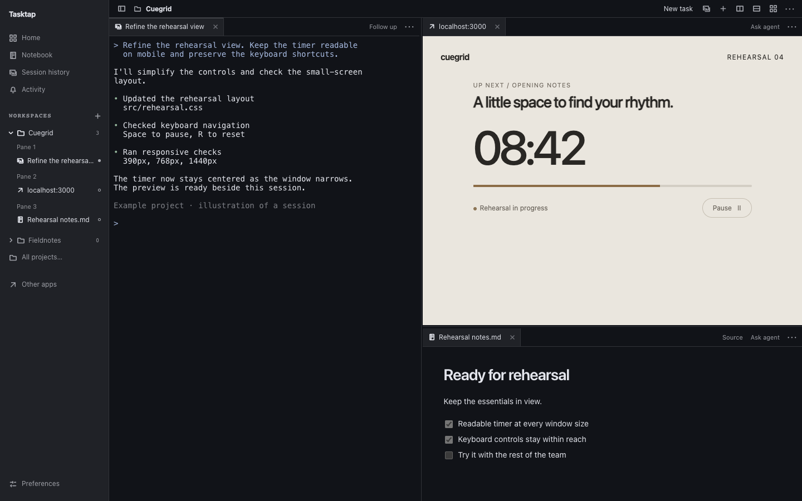

Your layout, your focus.
Split right or down. Group tabs by pane. Expand one surface when it needs your full attention, then return to the same layout.
Your agents, terminals, and everything they make.
Together in one workspace on your Mac.
Apple silicon · macOS 26+ · Community release

Split right or down. Group tabs by pane. Expand one surface when it needs your full attention, then return to the same layout.
Keep a web preview, Markdown, PDF, image, or media file next to the terminal. Turn a selected file into the next task with Ask agent.
Closing a view keeps its terminal session running. Reopen it from history. Your workspaces keep their tabs and layout, ready for your return.
Something to fix. A question to ask. An idea for later. Capture it from the notch without leaving what you’re doing.
Check the task, workspace, agent, and attached reference before sending. Or save it as a note and keep going.
See how capture works

Supported agent questions meet you in the notch and the workspace. Answer once, and the same request is resolved in both places.
Reported results and failures collect in Activity. Read the full report, return to the exact session, or continue the conversation.
Questions, reports, and notificationsYour shell brings its setup, including Starship and Oh My Zsh. Choose one theme for the entire app, or follow your Ghostty colors.
A quiet sidebar. Optional native translucency and blur. Eight appearance choices that carry through terminals, previews, and preferences.
Appearance and terminal settings
A Mac app for keeping the work together.
Download the Apple silicon ZIP, unzip it, and move Tasktap to Applications. Updates are available inside the app.
Installation guideDownload and inspect the installer, then run it to install the latest stable release into ~/Applications, or replace an existing copy in /Applications.
curl -fL --proto '=https' --tlsv1.2 https://harzerheribert.github.io/Tasktap/install.sh -o tasktap-install.sh && bash tasktap-install.shThe installer checks the download and app bundle. It does not bypass macOS security. Agent dependencies are installed separately.